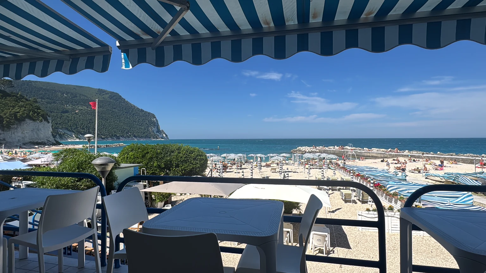
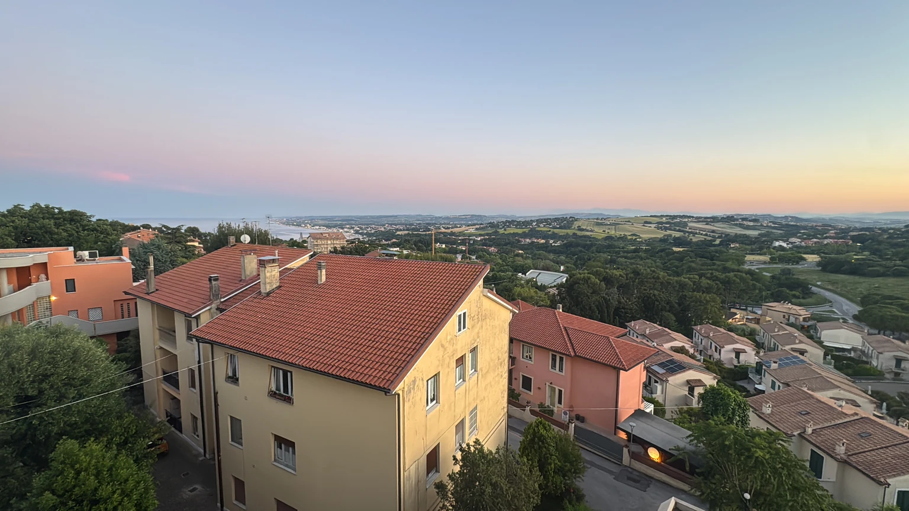
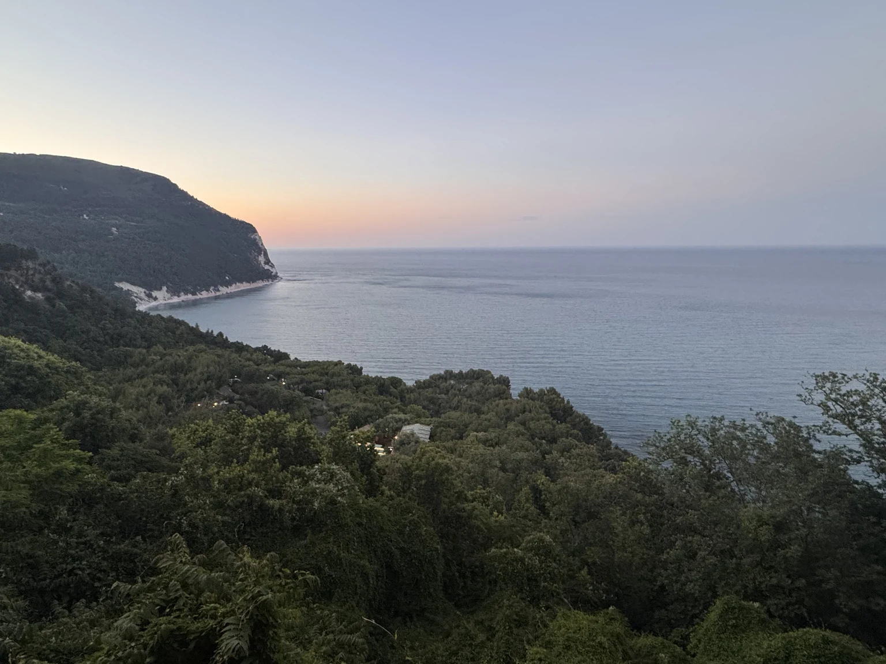
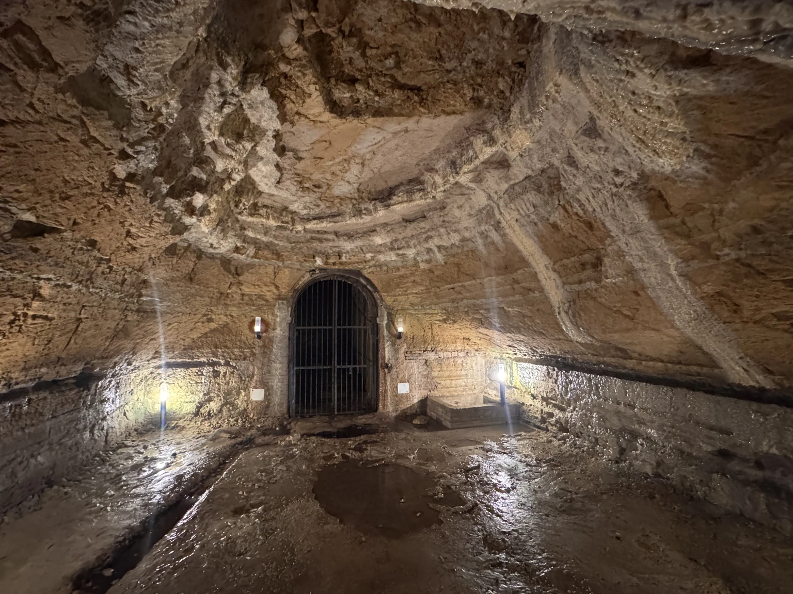
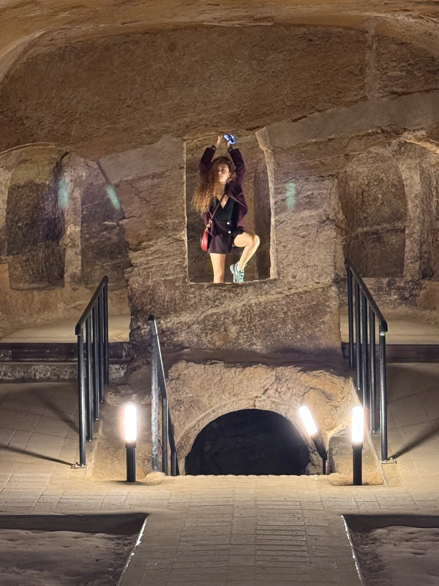
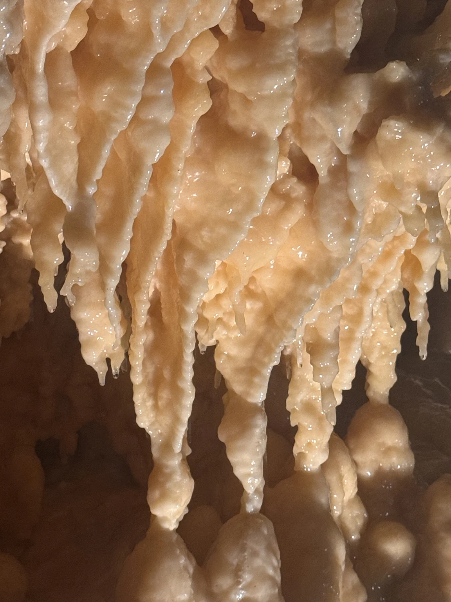
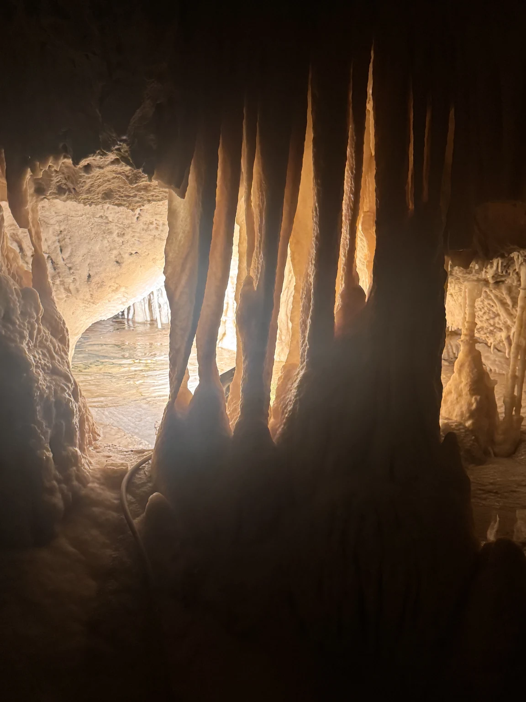
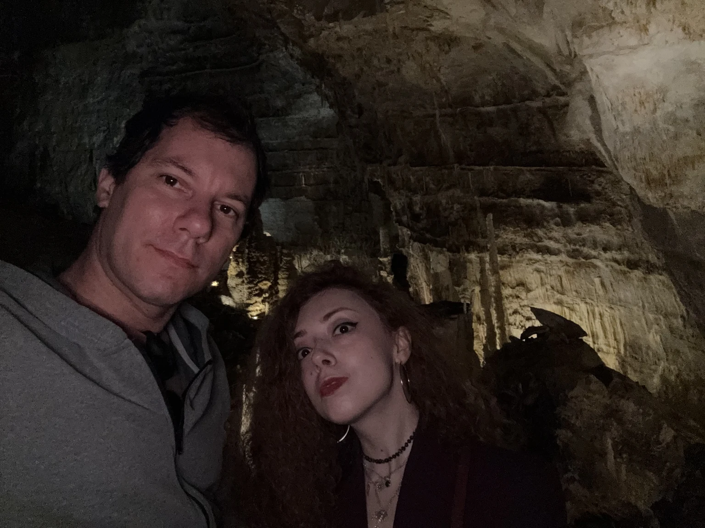
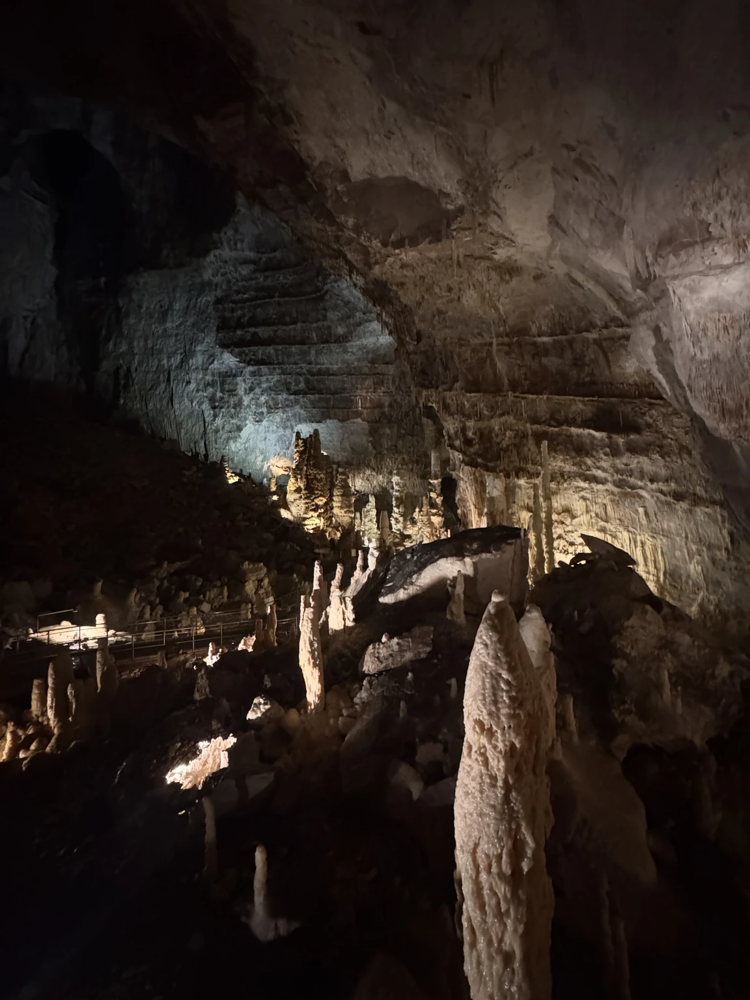
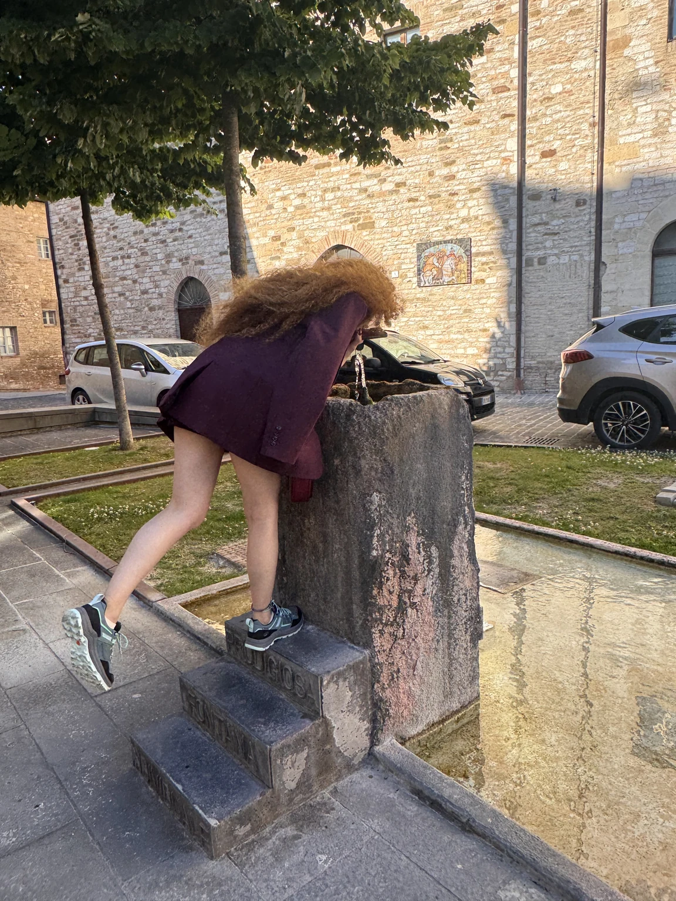

Un fine settimana diviso in due: il sabato sulla spiaggia, con l’Adriatico che a maggio è già turchese; la domenica sotto terra, prima nei cunicoli di Camerano e poi tra le stalattiti di Frasassi.
Il Conero è una montagna che finisce in mare. Tutto quello che c’è intorno, spiagge, paesi, grotte, dipende da come si è spaccata la sua roccia bianca.
2giorni
12fotografie
1video
2grotte
Sabato 23 maggio
Sirolo, la spiaggia Urbani
Si arriva a pranzo, si scende alla spiaggia e non si risale fino a sera: pesce sotto la tenda a righe, ciottoli bianchi, acqua fredda e limpida.

Dal tavolo, sotto la tenda
Pranzo
Ristorante La Grotta
Sta proprio sulla spiaggia Urbani, la piccola baia di ciottoli sotto il paese, e prende il nome dalla grotta naturale scavata nella falesia bianca. Cucina di pesce e frutti di mare, tavoli affacciati sull’acqua e sul Conero. È la prima cosa che abbiamo fatto a Sirolo, con la tenda a righe che filtrava il sole di mezzogiorno.
Poli e il cappello da spiaggia
A maggio l’acqua è ancora fredda. Ci si entra lo stesso, perché è di quel colore.

I tetti, dalla camera
Dove abbiamo dormito
Hotel Sirolo
Una camera nel paese, con la finestra sui tetti di coppi e, oltre, la campagna che scende verso Numana. Il tramonto arriva da dietro le colline e colora il cielo di rosa mentre il mare, dall’altra parte, diventa grigio.

La baia, dopo il tramonto
Il promontorio
Monte Conero
Cinquecentosettantadue metri di calcare che cadono a picco sull’Adriatico: è l’unico rilievo della costa tra Trieste e il Gargano. Il versante a mare è coperto di macchia mediterranea e protetto dal Parco regionale dal 1987. Dal belvedere di Sirolo, la sera, si vede la falesia bianca chiudersi sulla baia come un braccio.
La domenica il mare resta alle spalle. Si va a vedere cosa c’è sotto le colline.
Domenica 24 maggio
Domenica 24 maggio · mattina
Camerano, la città di sotto
Sotto il centro storico di Camerano, a pochi chilometri dal mare, si apre un reticolo di cunicoli scavati nell’arenaria. Si visita solo con la guida, a una ventina di metri di profondità.

Una sala con la volta a cupola
Grotte di Camerano
La città sotterranea
Un labirinto di gallerie scavate nell’arenaria sotto le case, che la tradizione fa risalire ai Piceni. Le quattro grotte principali portano i nomi delle famiglie nobili che le possedevano, Corraducci, Mancinforte, Ricotti e Trionfi; alle pareti restano bassorilievi, fregi e simboli religiosi. Sull’uso che se ne faceva, riunioni riservate, cantine, rifugio, si sono dette molte cose: la guida le racconta tutte, senza scegliere.

Poli nella nicchia
Sotto Camerano si cammina in fila, con la voce bassa, come se sopra qualcuno dormisse ancora.
Domenica 24 maggio · pomeriggio
Frasassi, la roccia che cresce
Un’ora verso l’interno, nella Gola della Rossa. Le grotte di Frasassi sono l’altro sottosuolo della giornata: non scavato dall’uomo, ma dall’acqua, goccia dopo goccia.
Dentro la grotta

Stalattiti da vicino

Le colonne

Noi due, al buio
Grotte di Frasassi
Sotto Genga
Furono scoperte nel 1971 da un gruppo di speleologi anconetani e aperte al pubblico nel 1974. Il percorso turistico attraversa l’Abisso Ancona, una sala così grande da contenere il Duomo di Milano, e poi gallerie di stalattiti, stalagmiti e colonne che l’acqua continua a costruire. Dentro ci sono sempre quattordici gradi: a maggio, dopo la spiaggia del giorno prima, sembrano pochi.

La sala grande
Il video è di undici secondi: bastano per capire che la roccia, lì dentro, ha una forma sola, quella dell’acqua.
Domenica 24 maggio · sera
Il ritorno, per l’Umbria
Da Genga si torna a Roma attraversando l’Appennino. Una sosta a Nocera Umbra, per l’acqua.

Nocera Umbra, la fontana
Sosta
Nocera Umbra
Paese di collina sulla Via Flaminia, noto da secoli per le sue sorgenti: l’acqua di Nocera si imbottiglia dall’Ottocento. Il centro storico, colpito duramente dal terremoto del 1997, è stato ricostruito pietra su pietra. Ci siamo fermati poco, il tempo di una fontana e di un giro intorno alla chiesa, prima dell’ultimo tratto di strada verso casa.